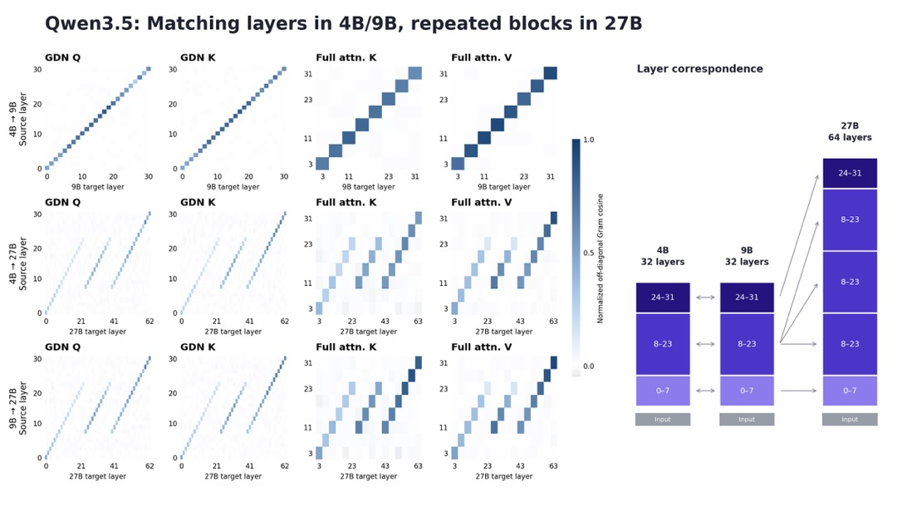
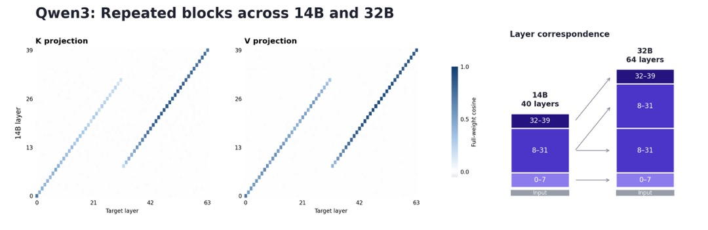
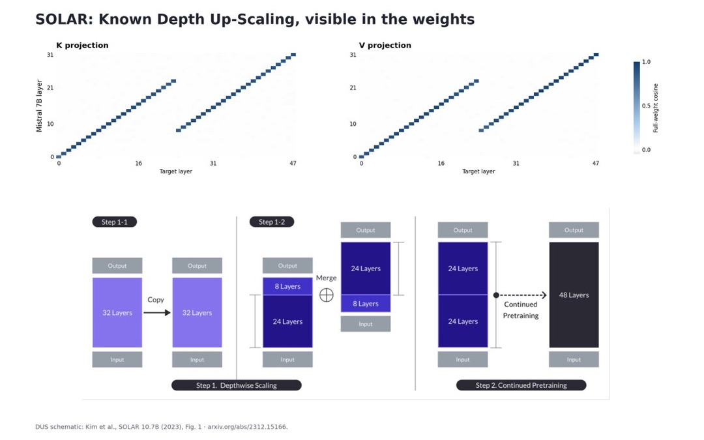
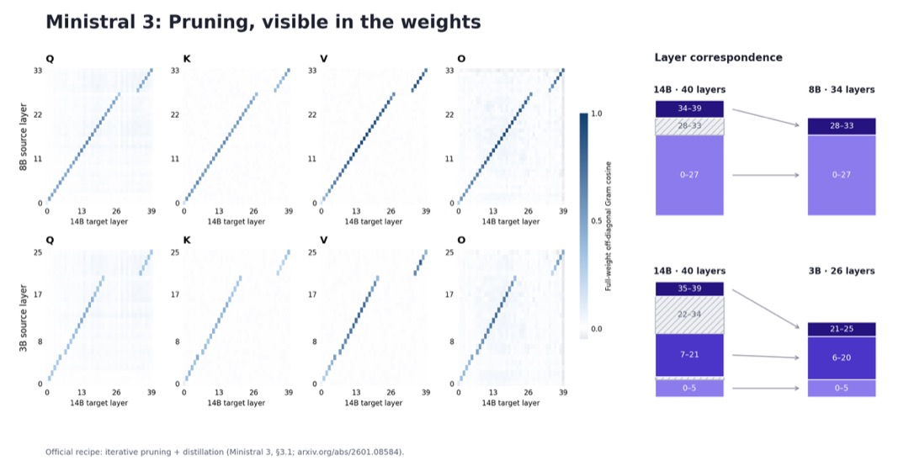
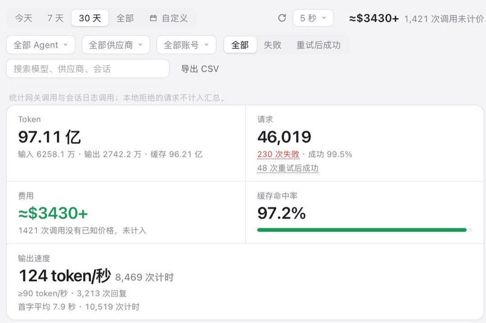
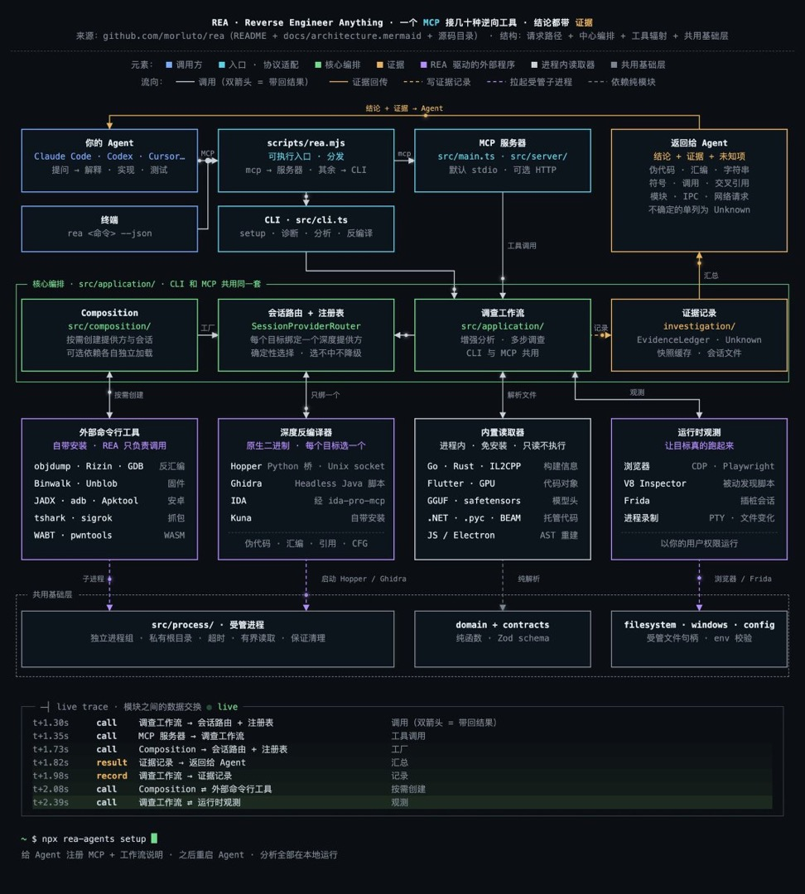
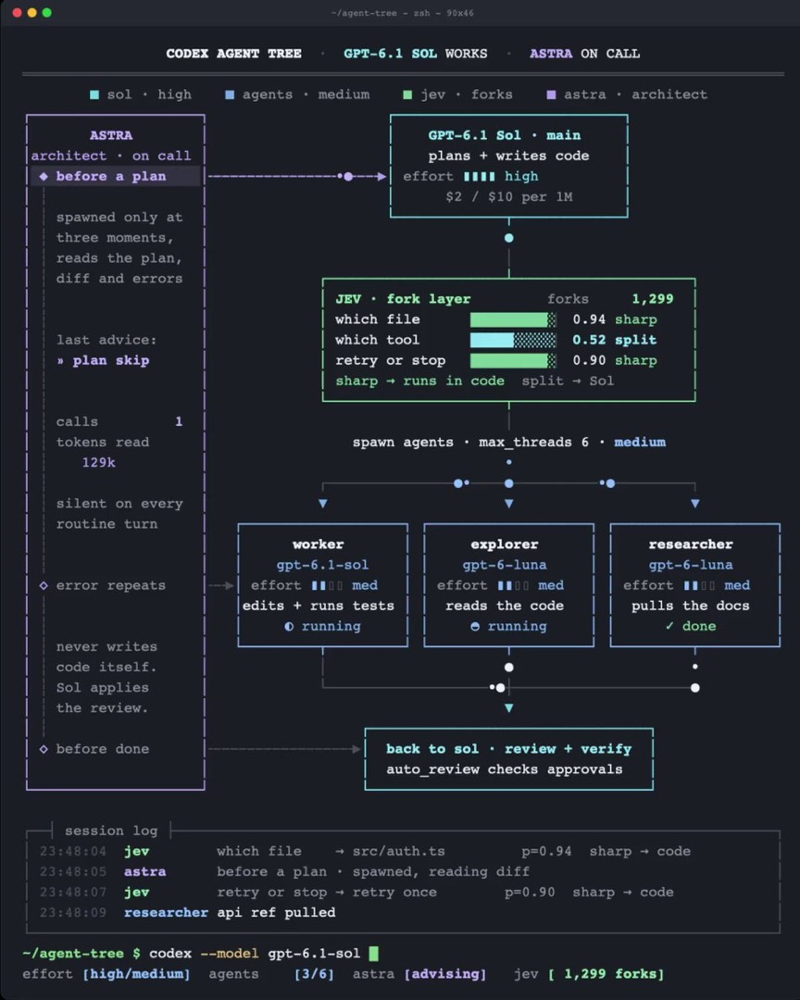
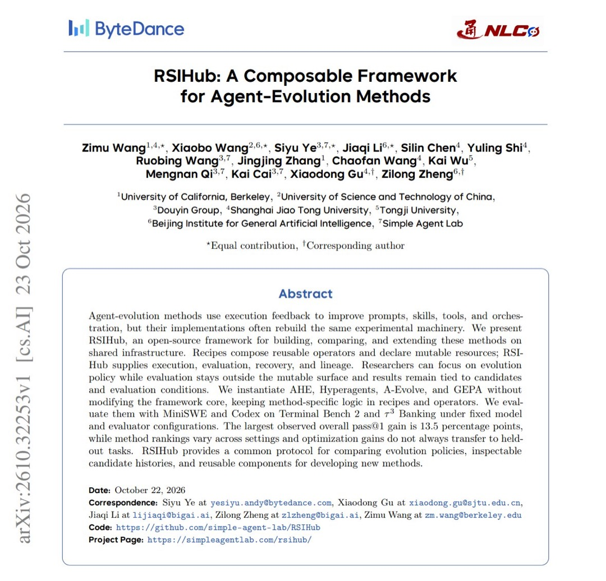
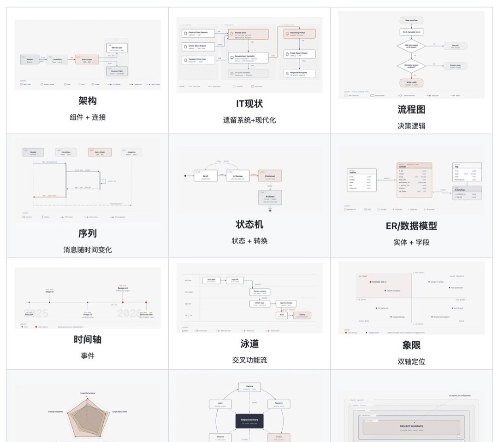
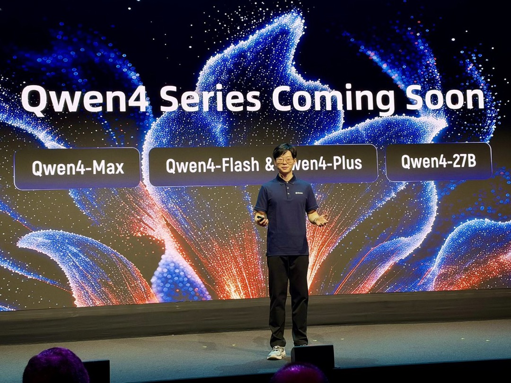

本期速览
02 Claude Code接omp分流编码
03 Claude Code系统提示词砍八成
05 Arch-diagram生成动态架构图
06 RSIHub统一评测Agent自进化方法
08 Beacon用Jev沉淀Agent记忆库
10 Qwen4系列四款模型即将发布
01｜Qwen跨尺寸层对应指向参数共享
来源（X） · @roifex · 2026-10-29 17:23
引用内容
犬戎 @inuEbisu
中文译文
对现有模型进行增长和收缩可能比我们想象的更为常见。
上个月在研究 K/V 迁移时，我们独立观察到了相同的层模式。一些额外发现：
- Qwen3.5：除了原帖中的 MLP 模式外，我们还在 4B ↔ 9B 中发现了同层对应关系，在 4B/9B ↔ 27B 中发现了重复块对应关系，这些在 GDN Q/K 和全注意力 K/V 投影几何中均可见。
- Qwen3：我们通过直接的 K/V 权重比较，在 14B ↔ 32B 中发现了类似的重复块结构。
我们参考了 SOLAR (https://arxiv.org/abs/2312.15166)：其记录的 Depth Up-Scaling 方法是复制一个模型、裁剪相对的两端、拼接保留的层，然后继续预训练。
此外，Ministral 3 在不同模型规模之间也显示出明显的层对应关系，与其技术报告中描述的剪枝和蒸馏方法一致。
这些模式暗示了参数共享、类似 YOCO 的 KV 共享以及循环执行的候选方案。这是我们希望探索的方向。
原文
Growing and shrinking existing models may be more common than we think.
We independently observed the same layer pattern while studying K/V transfer last month. Some additional findings:
- Qwen3.5: Beyond the MLP patterns in the original post, we found same-layer correspondence in 4B ↔ 9B and repeated-block correspondence in 4B/9B ↔ 27B, visible in both GDN Q/K and full-attention K/V projection geometry.
- Qwen3: We found a similar repeated-block structure in 14B ↔ 32B through direct K/V weight comparisons.
We included SOLAR (https://arxiv.org/abs/2312.15166) as a reference: its documented Depth Up-Scaling recipe copies a model, trims opposite ends, concatenates the retained layers, and continues pretraining.
Besides, Ministral 3 also shows clear layer correspondences across model sizes, consistent with the pruning and distillation described in its technical report.
The patterns suggest candidates for parameter sharing, KV sharing as in YOCO, and looped execution. That's the direction we're excited to explore.




02｜Claude Code接omp分流编码
来源（X） · @DracowynX · 2026-10-29 14:28
1. Claude Opus 5.5 只写任务书和 review，不亲自写实现
2. 后端丢给 omp，接 GPT 6.1 Sol（High 思考强度），实测在后端逻辑上比 Opus 5.5 更好
3. 前端则是给 Sonnet 5.5（Medium/High 思考强度），审美上感觉和 Opus 5.5 差不多，还更便宜
4. 调研和只读任务交给 DeepSeek v4.1 flash 1017（Max思考强度），不让它改代码
4. omp 在独立 git worktree 跑，不许 commit，必须先交补丁验收后才能合入
5. 结果不满意除非小问题，否则直接升级思考强度或更换模型重新派发任务
整体思路：我在 Claude Code 里和 Opus 对话，由它拆解任务、产出任务书，再通过 omp 调度不同厂家的模型去干活。干完后 Opus 亲自验收和 Review，不合格打回重做。
除 Claude 系模型外，其余模型统一通过 Magpie 网关管理（别问为什么不接 Claude）

03｜Claude Code系统提示词砍八成
来源（X） · @KobinFlow · 2026-10-29 16:24
最扎心的一个事实是：Anthropic 官方把 Claude Code 的系统提示词直接砍掉了 80%，结果模型代码跑分一点都没掉！
很多人还在用一两年前伺候老模型的那套“保姆式习惯”写 Prompt，字数越堆越多。面对 Opus 5.5 这代新模型，真正高手都在做减法：
1. 别教它怎么走，只给两件事： 一句话说清「终极目标是什么」+「怎么验证做对了」。只要你给它一个能跑出 Pass/Fail 的单测或判定脚本，它自己就能死磕闭环到底，根本不用你寸步不离地盯着。
2. 别迷信复杂的多 Agent 架构： 很多人喜欢无脑堆 Subagents，但 Addy 直言：子智能体不仅不会让事情变聪明，还会让延迟和账单成倍暴涨。从实测来看，「单个带 Skills 的 Agent」在代码质量和性价比上往往完胜多 Agent 编排。
3. 不知道怎么做，就让它反向面试你： 需求不明确时，别硬憋 Prompt。让 Claude 提问面试你，直到它能整理出一份完整的需求 Spec；然后开个新会话，拿着这份 Spec 丢给它直接开工。
4. 别当人肉代码扫描机： 代码写完，先调一个没看过聊天记录的独立 Agent 去把 Diff 审一遍、改一轮。把低级问题全甩给机器，人类只留着精力给核心业务风险做最终裁判。
一句话总结： 模型每升级一代，你最该做的第一件事不是拼命加规则，而是赶紧去提示词里“删代码”。每隔几个月给你的 Prompt 瘦一次身，别用伺候老模型的旧习惯，束缚了新模型的发挥。
引用内容
Addy Osmani @addyosmani
中文译文
原文
04｜Codex免费版可用GPT-6-Luna
来源（X） · @mranti · 2026-10-29 11:15
05｜Arch-diagram生成动态架构图
来源（X） · @slashui · 2026-10-28 19:00
做出来了！🎉
不只是需求文档：丢给它一个 GitHub 仓库或一篇文章，它也能把里面的内在关系理清楚，画成这种会动的架构图：
🧭 不套模板：先判断是分层系统、流水线还是带循环的流程，再决定怎么画
🎨 颜色有含义：模块按种类上色，连线按数据流向区分
⚡ 光点沿连线流动，底部 log 实时滚动"A → B"
🎬 一句话导出 HTML / 图片 / MP4 / GIF / Mermaid，说"30 秒视频"就给你 30 秒
🌏 用中文问出中文图，用英文问出英文图，日文也一样
Claude Code 和 Codex 都能用，一行装好：
npx @rokoai/arch-diagram install

引用内容
洛克船长 @slashui

06｜RSIHub统一评测Agent自进化方法
来源（X） · @Xudong07452910 · 2026-10-29 11:33
有的改 Prompt，有的改 Skill，有的改 Tool，也有的直接改 Harness。
问题是，它们到底谁更有效，其实一直很难公平比较。
因为很多论文都会自己搭一套执行环境、评测方式和搜索流程。分数都在涨，但底层条件不同，很难知道提升到底来自方法本身，还是实验环境。
这篇 RSIHub 做的，就是给 Agent 自进化搭一套统一的「实验台」。
它把执行环境、Evaluator、数据切分、版本管理和恢复机制都统一起来，不同 evolution 方法只负责决定：选哪个候选、怎么看轨迹、改什么、留下什么。
作者把 AHE、Hyperagents、A-Evolve、GEPA 这几类自进化方法全部搬进同一套框架，在 Terminal Bench 2 和 τ³ Banking 上统一比较。
结果在 Terminal Bench 2 上，MiniSWE 最高从 56.2% 提升到 69.7%，涨了 13.5 个百分点。
但换成更强的 Codex，最大提升只有 2.2 个百分点；到了 τ³ Banking，方法排名又重新变化。
甚至有些方法整体分数提高了，held-out split 反而退步。
这也说明，Agent 自进化现在可能很需要这种公共实验台。
大家已经很会让 Agent「改自己」了。
接下来需要判断它到底真的学会了，还是只是把当前环境调得更顺。
📎 arxiv: https://arxiv.org/abs/2610.32253

07｜AI Agent刷爆GitHub流水线
来源（X） · @ohayou792 · 2026-10-29 14:15
GitHub 刚宣布要紧急扩容 400 万个 CPU 核心和 160 PB 存储。
9 月单月 Commit 飙到了 74 亿次，整整是去年的 5 倍。
今年 GitHub 动不动就挂，90 天可用性一度掉到 84%，之前还以为是微软运维拉胯，
现在破案了：全是这帮无脑 Agent 害的。
人写代码好歹在本地测通了才推，现在的 Agent 是改个空格推一次，报错了换个变量推一次，疯狂跑 Actions 流水线试错。一晚上正经功能没憋出来几个，git log 刷出几十页。
最恶心的是，真人要提个正经 PR，流水线排队还要排在几万个死循环重试的 Agent 屁股后面。
天天吹 AI 提高生产力，代码质量没见提升多少，先把平台给拖垮了，倒逼微软买 400 万核服务器去擦屁股。
08｜Beacon用Jev沉淀Agent记忆库
来源（X） · @bkdgiffug · 2026-10-29 08:06
@asymptotelabs 把 Beacon 开源了，这是个能自我进化的 agent 记忆层。
它解决的事很具体：你在 Cursor、Claude Code、Codex、OpenCode 等 20 多个工具里留下的会话，它全给你连起来，再用 Jev 以低成本挑出真正有价值的运行，变成能反复用的技能。
agent 跑起来往往又乱又费，Beacon 先把这些都收着，由 Jev 判断哪些该留、哪些该丢，现在已经从跨 5 个框架里翻出 579 个会话。
每跑成一次，后面的 agent 就更聪明一些。顺手给个 star：
🔗 https://github.com/Asymptote-Labs/agent-beacon
09｜Diagram-design生成知识图表
来源（X） · @wanerfu · 2026-10-28 12:41
已经有近 6 万 Stars。
它干的事很简单：
把长文、流程和关系，做成一张专业好看的图表。
对我这种内容创作者来说，主要用在 6 个地方：
01｜给文章配专业插图
02｜做 PPT 和分享演示的素材
03｜把长内容压成一张适合传播的图
04｜学一门复杂的新知识
05 ｜梳理项目和工作流程
06 ｜做工作汇报
diagram-design Skill 开源库：https://github.com/cathrynlavery/diagram-design

10｜Qwen4系列四款模型即将发布
来源（X） · @jiangkoumo_ · 2026-10-29 18:50
幻灯片列出了四款模型：Qwen4-Max、Qwen4-Flash、Qwen4-Plus 和 Qwen4-27B。原帖引用 CTO 的原话「下周」（next week），没有给出具体日期
不过除型号名称外，这张图和原帖并没交代架构与参数细节，也没说明 27B 是否开放权重、四款是否同时上线
